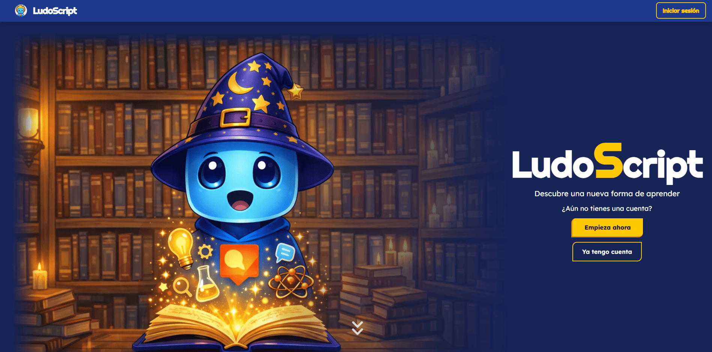

psychology_alt
Perfil híbrido
Combino desarrollo web con mentalidad de marketing y producto. Eso me ayuda a pensar en usuarios, conversión, claridad y utilidad real.
Técnico Superior en Desarrollo de Aplicaciones Web con formación previa en marketing. Me centro en crear soluciones útiles: aplicaciones, automatizaciones e interfaces que resuelven problemas reales.
Uso la tecnología para desarrollar soluciones enfocadas en el usuario.
Combino desarrollo web con mentalidad de marketing y producto. Eso me ayuda a pensar en usuarios, conversión, claridad y utilidad real.
He trabajado con modelos, agentes, IA local, APIs y automatización. No como concepto abstracto, sino como herramienta para mejorar procesos.
Mi proyecto principal no es un CRUD aislado: incluye usuarios, progreso, IA, generación desde PDFs, clases, duelos y panel de administración.
Plataforma diseñada para ayudar a alumnos a practicar mejor, detectar puntos débiles y personalizar el estudio mediante quizzes, flashcards e IA generativa desde documentos.

Evidencia de problemas resueltos y formación técnica sólida.
Colaboré en la creación de páginas web de Inversus, implementando estrategias de producto al desarrollo de la web
Herramientas que domino para construir, desplegar y optimizar.
HTML, CSS, JS, Vue, Vite, Java, Node.js, Express.
PostgreSQL, MySQL, MariaDB, Sequelize, JWT, APIs REST.
Gemini API, DeepSeek, Qwen, LM Studio, Agentes, Bash.
Git, Linux, Render, Vercel, Supabase, Docker básico.
Estoy orientado a puestos de desarrollo web, automatización e integración práctica de IA en productos o procesos internos.